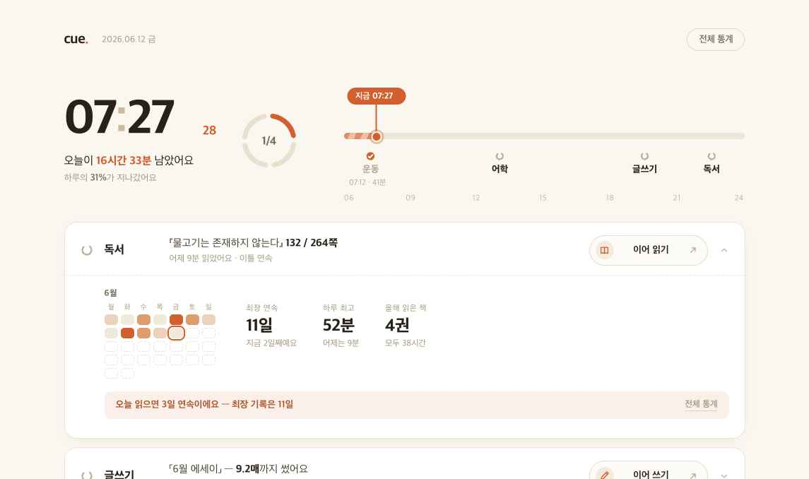
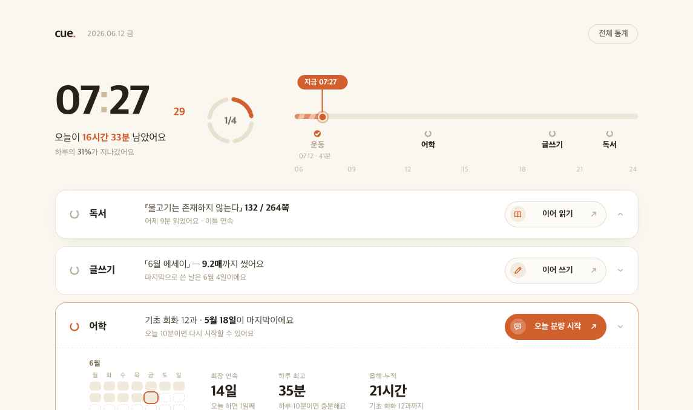
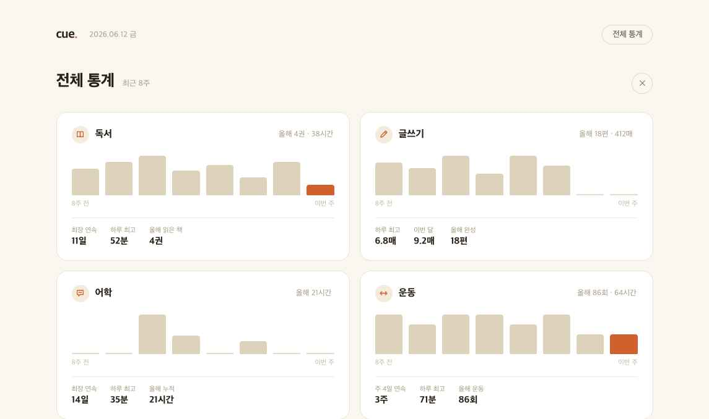

독서·글쓰기·어학·운동 네 도구를 매일 호출하게 만드는 대시보드. 이 문서 하나로 디자인 의도, 화면 명세, 데이터 계약, 카피 규칙까지 구현에 필요한 전부를 전달한다. 동봉된 시안-소스/ 폴더의 코드가 1차 기준이며, 이 문서는 코드만으로 전달되지 않는 의도와 규칙을 보충한다.
이 앱의 단 하나의 목적: 사용자가 오늘 네 가지 활동(독서·글쓰기·어학·운동)의 도구를 실제로 열게 만드는 것. 모든 기록은 각 도구에서 자동으로 측정되어 넘어온다 — 대시보드에는 수동 입력·체크 UI가 없다.



나머지 캡처(img/02 글쓰기 펼침, img/04 운동 펼침)도 동봉. 동작하는 시안은 시안-소스/큐 대시보드 v8.html을 브라우저에서 열어 확인한다.
| 영역 | 구성 | 인터랙션 |
|---|---|---|
| ① 헤더 | 로고(cue.), 날짜, [전체 통계] 버튼 | 버튼 → 전체 통계 화면 |
| ② 히어로 | 현재 시각(초 포함) · 남은 시간 · 경과율 / 하루 고리(n/4) / 오늘 흐름 타임라인 | 전부 보기 전용. 클릭 요소 없음 |
| ③ 활동 행 ×4 | 순서 고정: 독서 → 글쓰기 → 어학 → 운동. 각 행 = 고리 마크 + 이름 + 재개 지점 문장 + 보조 한 줄 + CTA + 펼침 화살표 | 행 클릭 → 아래로 기록 펼침(한 번에 하나만). CTA 클릭 → 해당 앱으로 이동(행 펼침과 독립, stopPropagation) |
| ④ 펼침 영역 | 이번 달 캘린더 히트맵 + 기록 3종 + 경신 한 줄(beat) | beat 우측 [전체 통계] 링크 |
| ⑤ 전체 통계 | 활동별 카드: 8주 막대 추이 + 누적 요약 + 기록 3종 | ✕ 또는 ESC로 복귀 |
#FAF7F1 배경#FFFFFF 카드#27211A 본문 잉크#A2967F 보조 텍스트#ECE4D3 테두리#D2602F 포인트(유일)| 서체 | Pretendard Variable. 숫자는 항상 font-feature-settings: 'tnum'(고정폭) |
| 타입 스케일 | 시계 68px/800 · 섹션 제목 26px/800 · 행 이름 16.5px/800 · 재개 문장 15px · 기록값 24px/800 · 라벨·캡션 11~12.5px |
| 모서리 | 행 카드 18px · 안쪽 박스 10px · 캘린더 셀 5px · 버튼 pill(999px) |
| 레이아웃 | 최대 폭 1060px 중앙 정렬, 좌우 패딩 48px. 행 간격 12px |
| 그림자 | 펼친 행에만 0 6px 24px -14px rgba(60,45,25,.25). 그 외 플랫 |
| 히트맵 단계 | 0: #F0EADC / 1: #ECD2BB / 2: #DE9D6C / 3: #D2602F — 경계값은 그 달 최대치의 34%·67% |
HH:MM 68px, 콜론은 #C9BCA1. 초는 바로 옆 베이스라인에 17px 포인트색, min-width를 줘 자릿수 변화에 레이아웃이 떨리지 않게 한다.#E9E1CF. 중앙에 n/4.px(h) = (clamp(h,6,24) − 6) / 18 × 100%.#EEE7D9). 경과 구간은 포인트색 계열 대각 스트라이프가 채우고 계속 흐른다(7-2).지금 HH:MM) + 세로선 + 축 위의 점. 세로선은 축에서 끝난다 — 아래 활동 라벨 영역(축 기준 +21px 아래)과 절대 겹치지 않는다.07:12 · 41분 메타. due 활동은 이름이 포인트색.pointer-events: none.18px(마크) · 76px(이름) · 1fr(문장 2줄) · auto(CTA) · 14px(화살표), 간격 16px, 패딩 18px 22px.aria-expanded). 호버 시 배경 #FCFAF5.#E6DCC9 테두리. 호버: 포인트색 채움(아이콘 캡슐은 반투명 백색). due 행: 항상 채워진 상태.cta 필드 그대로: "이어 읽기" / "이어 쓰기" / "오늘 분량 시작" / "운동 기록 열기"(완료 후 "오늘 기록 보기").title로 날짜·수치 툴팁. 설명 캡션은 넣지 않는다(과거 피드백으로 제거됨).| 상태 | 판정 | 표현 |
|---|---|---|
| 완료 (done) | 오늘 해당 활동 세션이 DB에 기록됨 | 닫힌 원+체크, 이름·문장 회색, 행 배경 투명, CTA는 보기형 라벨, 타임라인에 시각·분량 메타 |
| 지금 할 일 (due) | 현재 시각이 보통 수행 시각을 지났고 미완료인 활동 중 가장 이른 것 | 행 테두리·고리·CTA 포인트색, 고리 회전. 동시에 1개만 |
| 대기 (default) | 그 외 | 모노톤, CTA 외곽선형 |
| 하루 마감 | 4개 모두 완료 | 하루 고리 4호 모두 닫힘. (마감 축하 연출은 이번 범위 외 — 임의로 추가하지 말 것) |
DUE_ID = 'lang'으로 고정된 목업이다. 실제 구현에서는 위 판정 규칙(시각 + 완료 여부)으로 계산하고, 운동 완료 여부도 시계가 아닌 DB 세션 존재로 판정한다.| # | 대상 | 명세 | 의도 |
|---|---|---|---|
| 7-1 | 지금 점 | box-shadow 맥동, 2s ease-out 무한. 3px → 14px 확산 후 소멸 | "지금"으로 시선 고정 |
| 7-2 | 경과 스트라이프 | 115° 대각 스트라이프(포인트색 58%·28% 두 톤, 8px 간격)가 0.7s/18px 속도로 진행 방향 흐름 | 시간이 소모되고 있다는 상시 압박 |
| 7-3 | due 고리 | 마크 7s/회전 무한 | 열린 고리가 "살아 있음" |
| 7-4 | 행 펼침 | 0.22s ease, translateY(−5px)→0. opacity는 건드리지 않는다(과거에 opacity 종료값 누락으로 내용이 통째로 안 보이는 버그가 있었음) | — |
| 7-5 | 완료 전환 | 고리 호·하루 고리 채움 0.3s 트랜지션 | 완료의 보상감 |
모든 애니메이션은 @media (prefers-reduced-motion: no-preference) 안에서만 실행. 끄면(또는 OS 설정 시) 정지 상태가 완성된 디자인이어야 한다.
시안의 data.js(window.CUE8)가 계약서다. 모든 수치는 목업이므로 한 글자도 그대로 옮기지 말고 아래 매핑으로 DB에서 채운다.
| 필드 | 타입 | 채우는 값 |
|---|---|---|
hook | {title, strong, tail} | 직전 세션의 재개 지점. 독서=책 제목+현재/전체 쪽수, 글쓰기=문서 제목+누적 매수, 어학=마지막 레슨명+마지막 학습일, 운동=오늘 세션(시각·부위·시간) 또는 주간 진행 |
sub | string | 보조 사실 한 줄(어제 분량, 마지막 날짜, 연속 주 수 등) |
cal | number[28~31] | 이번 달 1일~말일의 일별 누적량. 단위: 독서·어학·운동=분, 글쓰기=원고지 매수 |
records | {lb, v, note}[3] | 활동별 구성 고정 — 독서: 최장 연속 / 하루 최고 / 올해 읽은 책 · 글쓰기: 하루 최고 / 이번 달 매수(전월 비교) / 올해 완성 편수 · 어학: 최장 연속 / 하루 최고 / 올해 누적 · 운동: 주 4일 연속 / 하루 최고 / 올해 횟수. note에는 현재값을 붙여 기록과의 격차가 보이게 |
beat | string | 오늘 행동으로 깰 수 있는 가장 가까운 기록 한 문장. 서버 또는 클라이언트에서 규칙 생성(9절 문체 준수) |
weekly8 | number[8] | 최근 8주 주별 합계(운동만 횟수, 나머지 분/매) |
total | string | 연간 요약 — "올해 4권 · 38시간" 형식 |
이 화면의 모든 문장이 그대로 출시 문구가 된다. 규칙:
beat 문장 패턴: "오늘 [최소 행동]이면 [구체 결과]예요 — [기준 기록]". 예: "오늘 읽으면 3일 연속이에요 — 최장 기록은 11일".
<button aria-expanded>, 하루 고리는 role="img" + aria-label, 장식 SVG는 전부 aria-hidden.| 경로 | 내용 |
|---|---|
작업지시서.html | 이 문서 (브라우저 인쇄 → PDF 가능) |
img/01~05-시안.png | 시안 캡처 5종 (기본·글쓰기·어학·운동 펼침·전체 통계) |
시안-소스/큐 대시보드 v8.html | 동작하는 시안 — 브라우저에서 바로 열림 |
시안-소스/app.jsx | 화면 전체 구현(React). 컴포넌트: Hero / DayRing / MonthCal / AppRow / StatsView |
시안-소스/style.css | 전체 스타일 — 토큰·애니메이션 포함, 그대로 이식 가능 |
시안-소스/data.js | 데이터 계약(목업). 8절 매핑으로 DB 연결 |